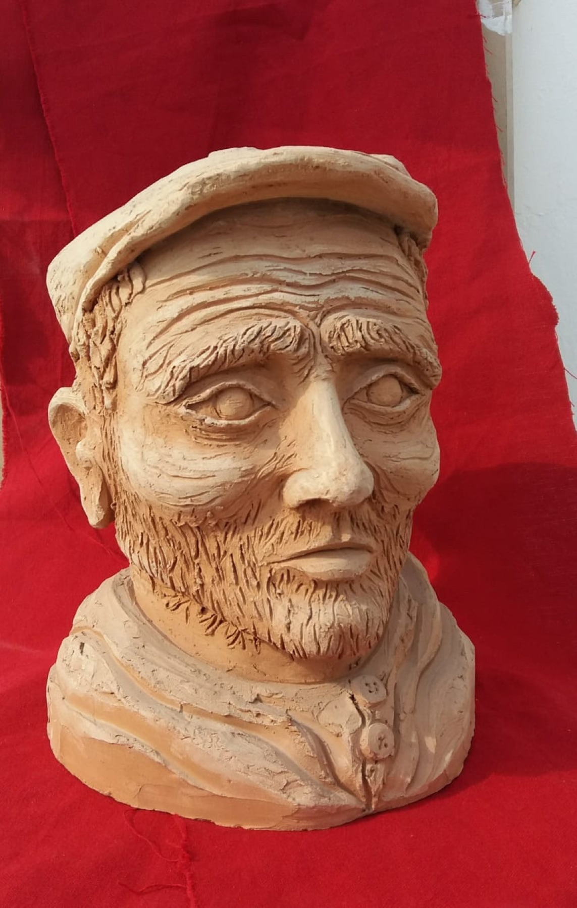
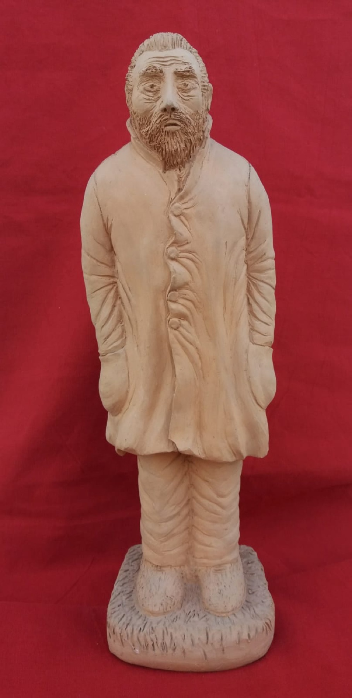

Diario · 25 novembre 2026
Un busto in terracotta: il Vecchietto con Coppola
Il Vecchietto con Coppola è un busto: la testa con la sua coppola, il collo, l'attacco delle spalle con la camicia.

È terracotta, e non l'ho dipinto. Le rughe, le sopracciglia, la barba sono solchi nella creta, uno accanto all'altro. La terracotta la lavoro con le mani.
Non è l'unico vecchio che ho fatto in terracotta. Sul sito c'è anche La vecchiaia: lì l'uomo è intero, in piedi, col cappotto abbottonato. Anche lui ha la barba e la fronte segnata. Il Vecchietto invece si ferma alle spalle.

Se lo vuoi a casa tua, scrivimi dalla pagina Contatti: è un pezzo unico, ed è in vendita.
Vecchietto con Coppola · Terracotta · 25 × 59 cm